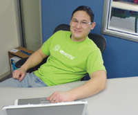

Dr. Dobb's Journal May 2007
Employer: Foxmarks
Job: Senior Engineer
DDJ: Where do you work?
SB: I work at Mitch Kapor's new startup, Foxmarks, in San Francisco, California.
DDJ: What do you like about your job?
SB: Aside from Mitch, there's only three of us. That means I get to work on a lot of problems. Front end, back end, I do whatever it takes to get working code out the door. Best of all, since we're situated between the Creative Commons folks and the Open Source Application Foundation folks, the feeling of open source permeates the whole building.
DDJ: What do you find challenging about your job?
SB: All three of us are generalists, so it can be a challenge coping with the lack of specialists, such as an information retrieval expert and a web search expert. Furthermore, it can be hard to find good Python programmers right now, since there's a gravidic pull on them toward Google in Mountain View.
DDJ: What have you found that makes your job easier?
SB: I can't say enough about Python and agile programming. Piecing together small, well-documented, well-tested pieces of software makes solving big problems easier. Furthermore, I know I can rely on the equation:
(3 weeks of effort) × (1 O'Reilly book) = (some level of domain expertise)
Employer: Soft900.com
Job: Owner
DDJ: What's your job at Soft900.com?
RN: I am the owner. Aside from a few commercial software products, I make a living by selling my services as an independent consultant, mentor, architect, developer, and trainer.
DDJ: What do you like about your job?
RN: As the owner of a small company, I am fully employed. Not only do I have to do my own business development, but I am also required to participate in full lifecycle modeling, software creation, and training. You tend to live or die each year based upon your ability to keep both heads up and heads down at the same time.
DDJ: What have you found that makes your job easier?
RN: All aspects of my professional life have been made a lot easier by using Borland's/ CodeGear's tools. Even decades ago, Borland/Inprise was keeping many of our plastic pencil pockets lined and color laden with tomorrow's concepts today. Indeed, Microsoft's modern .NET class library looks and smells so much like VCL that picking up such an excellent technology was relatively easy; even the IDE felt familiar.
Employer: Philips Electronics
Job: Software Architect
DDJ: Where do you work?
LP: At Philips Innovation Campus in Bangalore. It's an R&D centre for Philips Electronics.
DDJ: What's your job there?
LP: I work as a software architect in the Medical Systems division. My primary role is to interact with customers and counterparts for gathering requirements and creating a global design, and then to lead the team technically to implement the same and deliver. My contribution largely happens during the requirement and design phases of a project.
DDJ: What do you like about your job?
LP: Interaction with customers and defining requirements for the project. Also, I love to design.
DDJ: What do you find challenging about your job?
LP: Defining easy-to-use interfaces, especially for platform software. And driving a team to deliver high-quality software on time.
DDJ: What have you found that makes your job easier?
LP: Good discussions with counterparts and good rapport with the team and counterparts. Plus the use of appropriate tools during development, like build tools and review tools—and the inevitable Google.